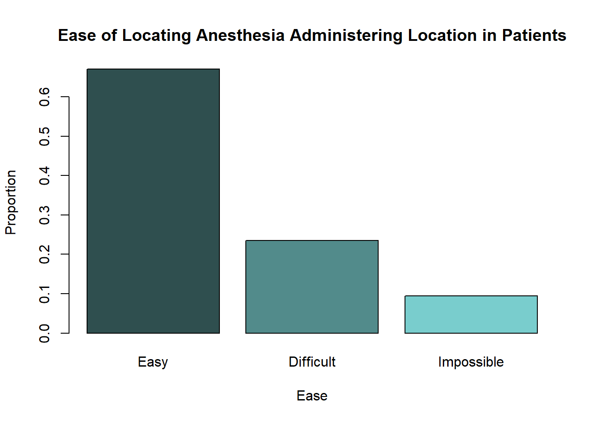
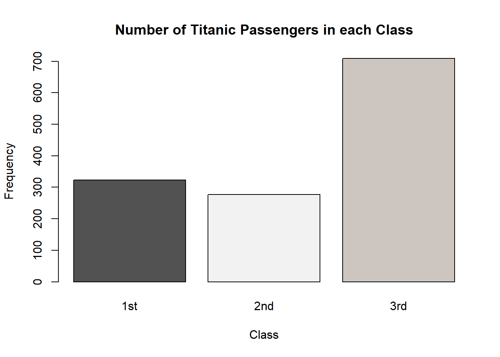
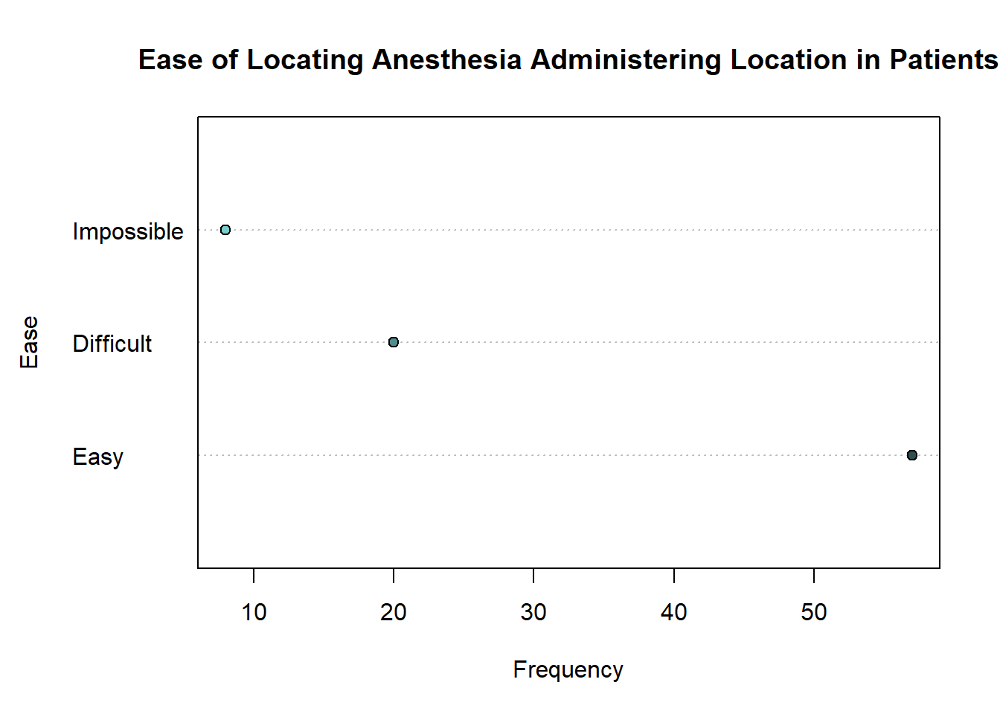
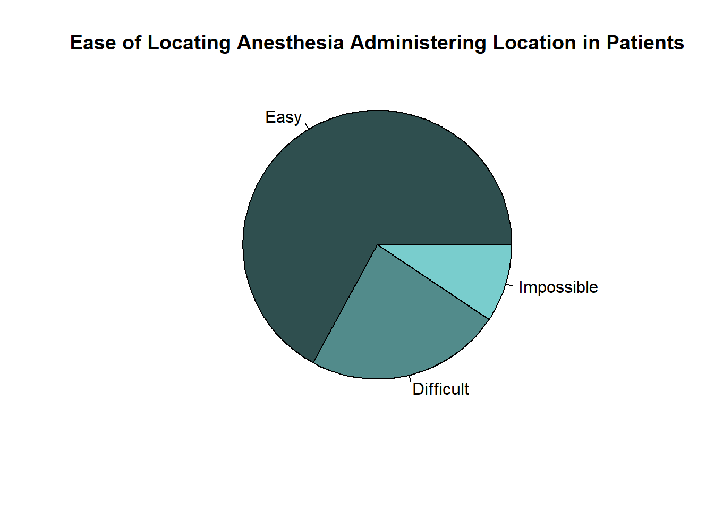
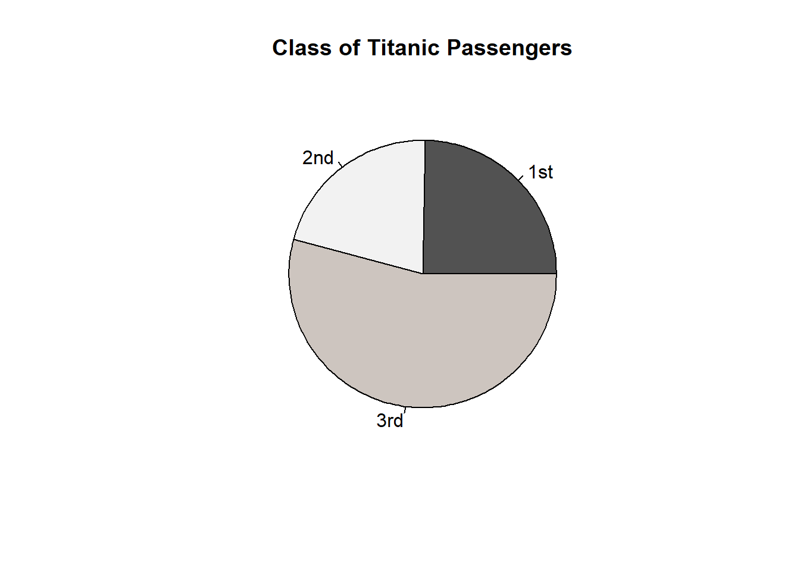
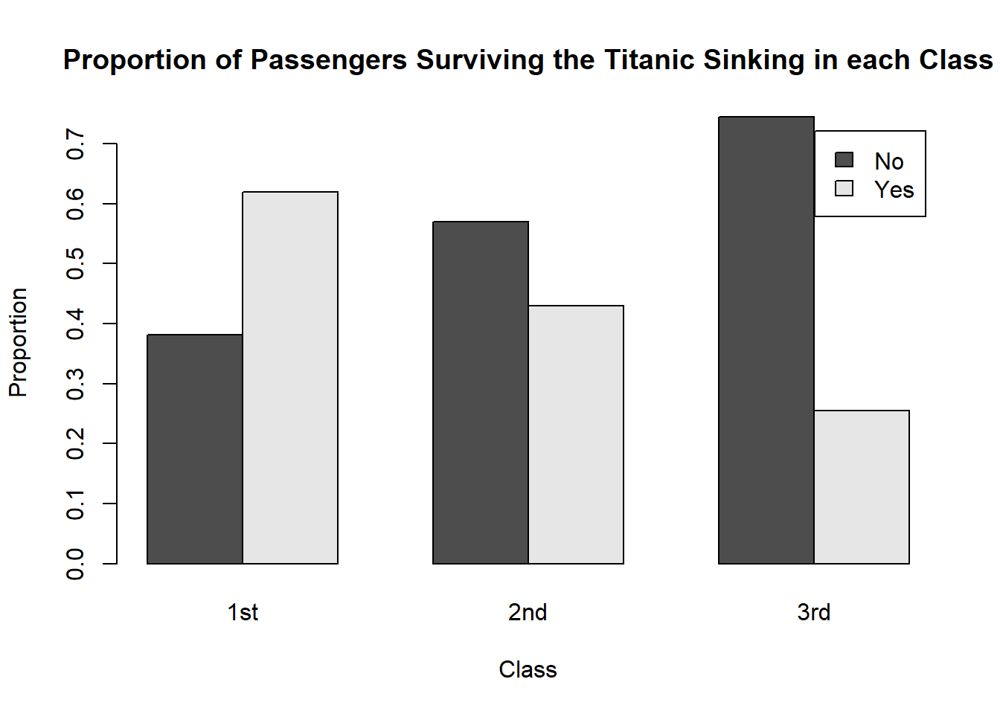

S2S Lab 4
1 Qualitative Data
Qualitative data is the term used when a variable has different categories or groups or levels. This could be things such as students' grades, the genders of patients in an experiment or which treatment subjects have been given. There are several ways that qualitative data can be summarised and presented.
1.1 Tables
Frequency tables summarise qualitative data by showing the different groups/categories in a variable and the corresponding frequency with which they occur - that is, how many observations fall into each category.
Frequency tables can be created in R using the table() function. We have already seen table() used in Lab 3, but let's revisit it with an example.
The data set EPIDURAL from the package PASWR2 contains information on 85 patients from a study used to determine whether administering epidural anesthesia (a pain relief administered in the back) to pregnant women in labour is better whilst they are in the traditional sitting position, or when they are in a "hamstring stretch" position. This contains several variables relating to each patient and the treatment they receive (to see more about what each of these variables describes, run the code help("EPIDURAL")).
We can load the data frame into our Environment tab and look at the first five rows using the following code (make sure you have installed the PASWR2 package on whatever device you are using R with beforehand).
library(PASWR2)
data("EPIDURAL")
head(EPIDURAL)| doctor | kg | cm | ease | treatment | oc | complications |
|---|---|---|---|---|---|---|
| Dr. B | 116 | 172 | Difficult | Traditional Sitting | 0 | None |
| Dr. C | 86 | 176 | Easy | Hamstring Stretch | 0 | None |
| Dr. B | 72 | 157 | Difficult | Traditional Sitting | 0 | None |
| Dr. B | 63 | 169 | Easy | Hamstring Stretch | 2 | None |
| Dr. B | 114 | 163 | Impossible | Traditional Sitting | 0 | None |
| Dr. B | 121 | 163 | Difficult | Hamstring Stretch | 3 | None |
The variable ease is a factor variable which tells how easy the physician found it to locate where the epidural anesthesia should be administered for each patient. It has levels "Easy", "Difficult" and "Impossible".
We can summarise the number of patients that fall into each level of the ease variable using the table() function as follows.
epi_freq <- table(EPIDURAL$ease)
epi_freq
Difficult Easy Impossible
20 57 8 This frequency table shows us that there are 57 patients in the data set for whom it was easy to administer the anesthetic, 20 who it was difficult for and 8 for whom it was impossible to find where to administer the anesthetic.
The levels of ease are automatically presented in alphabetical order. Can you reorder the labels so that they go in the order "Easy", "Difficult" and "Impossible"?
EPIDURAL$ease <- factor(x = EPIDURAL$ease,
levels = c("Easy", "Difficult", "Impossible"))
levels(EPIDURAL$ease)[1] "Easy" "Difficult" "Impossible"The function levels() can be used to see the levels of a factor variable, as well as the order they are stored in.
We can update the frequency table epi_freq so that the different levels of ease now appear in a sensible order.
epi_freq <- table(EPIDURAL$ease)
epi_freq
Easy Difficult Impossible
57 20 8 We could also create a table showing the proportion of the total number of patients which fall into each level of ease using prop.table(). We need to make sure that we give a pre-existing table to this function. We can use the table epi_freq created in the question above here.
epi_prop <- prop.table(epi_freq)
epi_prop
Easy Difficult Impossible
0.67058824 0.23529412 0.09411765 Now we can see that it was easy to find where to administer the anesthetic for roughly 67% of patients, difficult for roughly 24% and impossible for 9% of patients.
The TITANIC3 data set from the PASWR2 package contains information on the survival status of passengers on the Titanic. Load this data set into your Environment tab and create a frequency table showing the number of passengers who survived and the number who did not.
Remember to explore the data set using the help() and str() functions. It might help to rename the levels of the survived variable so they are clear.
data("TITANIC3")
TITANIC3$survived <- factor(x = TITANIC3$survived, labels = c("No", "Yes"))
table(TITANIC3$survived)
No Yes
809 500 What proportion of passengers survived the Titanic sinking?
We can find the proportion of survivors by using the prop.table() function.
prop.table(table(TITANIC3$survived))
No Yes
0.618029 0.381971 1.2 Barplots
Barplots are a way to graphically summarise qualitative data. You will most likely have seen many barplots before, but now we're going to learn how to create our own.
The function used to create barplots in R is barplot(). It takes the following arguments:
height =: this is the vector or matrix which contains a summary of the qualitative data; this could be a frequency table or a table of proportions.col =: this is a vector of colours to be used for the bars in the barplot. If you want to see a list of colour names that R can use, run the codecolors()- there are also documents online which will show you the actual colours too!main =: this is the main title of the plot.xlab =: this is a label for along the x-axis.ylab =: this is a label for along the y-axis.ylim =: this is a vector giving the limits that the y-axis should be spread over.
The only essential argument to give to barplot() is height =. For a full list of the arguments that can be used within barplot(), use the code help("barplot").
We can create a barplot showing the number of patients from EPIDURAL that fall into each level of ease using the following code.
barplot(height = epi_freq,
col = c("darkslategray", "darkslategray4", "darkslategray3"),
main = "Ease of Locating Anesthesia Administering Location in Patients",
xlab = "Ease",
ylab = "Frequency")We can also use the table of proportions epi_prop to create a barplot, this time showing the proportion of patients in each level of ease, rather than the frequency.
barplot(height = epi_prop,
col = c("darkslategray", "darkslategray4", "darkslategray3"),
main = "Ease of Locating Anesthesia Administering Location in Patients",
xlab = "Ease",
ylab = "Proportion")
Notice that the shapes of both these barplots are identical. The only difference between them is the scale used on the y-axis.
Complete the code below to create a barplot which shows the number of passengers on the Titanic belonging to 1st, 2nd and 3rd class respectively.
(height =,
col = c("gray32", "gray95", "seashell3"),
main = "Number of Titanic Passengers in each Class",
xlab = "Class",
ylab = "Frequency")barplot(height = table(TITANIC3$pclass),
col = c("gray32", "gray95", "seashell3"),
main = "Number of Titanic Passengers in each Class",
xlab = "Class",
ylab = "Frequency")
1.3 Dot Charts
Dot charts show similar information to barplots and summarise qualitative data. They show a dot for each level of a categorical variable which indicates the frequency of that level (see below for an example).
Dot charts can be made in R using the function dotchart(). This takes similar arguments to those used by barplot() above, including:
x =: this is the vector or matrix which contains a summary of the qualitative data; this could be a frequency table or a table of proportions.bg =: this is the colour to be used inside the dot.
Again, the only essential argument to provide is x =.
We can create a dot chart showing the number of patients from EPIDURAL in each level of ease using the following code.
dotchart(x = epi_freq,
bg = c("darkslategray", "darkslategray4", "darkslategray3"),
main = "Ease of Locating Anesthesia Administering Location in Patients",
xlab = "Frequency",
ylab = "Ease")
1.4 Pie Charts
A third way to graphically present qualitative data is with a pie chart. These show the relative frequencies of different levels of a categorical variable as proportions of a "pie".
Pie charts are sometimes not favoured by statisticians because it can be difficult to clearly see the differences in proportions when they are very similar. Pie charts can still be used though to show the proportion of observations in a category, in relation to the total number of observations.
The function used to create pie charts is pie(), which takes the following arguments:
x =: this is the vector which summarises the qualitative data as frequencies or proportions.radius =: this determines the size of the pie chart within your plotting window.col =: this is a vector of colours which are to be used for each "slice" of the pie chart.
You can see a full list of the arguments that can be given to the pie() function using help("pie"). The only necessary argument to provide is x =.
We can create a pie chart showing the proportion of patients in each level of ease using the code below.
pie(x = epi_prop,
radius = 0.9,
col = c("darkslategray", "darkslategray4", "darkslategray3"),
main = "Ease of Locating Anesthesia Administering Location in Patients")
Create a pie chart showing the proportion of passengers on the Titanic in each class.
pie(x = table(TITANIC3$pclass),
col = c("gray32", "gray95", "seashell3"),
main = "Class of Titanic Passengers")
For more details on summarising univariate qualitative data and creating suitable graphical displays, see Section 2.3 Displaying Qualitative Data in Probability and Statistics with R.
1.5 Bivariate Data
So far, we have looked at different ways to visualise information about one categorical (or qualitative) variable. Because only one variable has been considered, it is called univariate data.
We will now turn our attention to bivariate categorical data. This means we will look at ways to visualise information about two categorical variables at the same time. We can expand upon some of the methods we have already learned to allow two categorical variables to be considered.
In Section 1.1 we looked at the use of the table() function to create frequency tables for one categorical variable. We can expand upon the use of this function so that frequency tables of two categorical variables can be created. These are known as two-way contingency tables.
In order to create a two-way contingency table, simply provide the second categorical variable you wish to use as an additional argument.
The data set EPIDURAL contains a variable doctor which indicates the physician ("Dr. A", "Dr. B", "Dr. C" or "Dr. D") who administered the epidural anesthesia. Table 1.1 shows the number of patients who fall into each level of the doctor and ease variables.
| Easy | Difficult | Impossible | |
|---|---|---|---|
| Dr. A | 19 | 3 | 1 |
| Dr. B | 7 | 10 | 4 |
| Dr. C | 18 | 3 | 0 |
| Dr. D | 13 | 4 | 3 |
We can recreate Table 1.1 in R using the following code.
epi_tab <- table(EPIDURAL$doctor, EPIDURAL$ease)
epi_tab
Easy Difficult Impossible
Dr. A 19 3 1
Dr. B 7 10 4
Dr. C 18 3 0
Dr. D 13 4 3Create a two-way contingency table showing the number of passengers who survived and did not survive in each of the three classes (1st, 2nd and 3rd).
table(TITANIC3$pclass, TITANIC3$survived)
No Yes
1st 123 200
2nd 158 119
3rd 528 181How many 3rd class passengers survived the sinking of the Titanic?
Barplots are a useful tool to present the information from a two-way contingency table graphically. For example, we can produce a barplot, which shows the same counts as in Table 1.1, using the following code.
barplot(height = epi_tab,
legend.text = TRUE,
col = c("seashell", "rosybrown2", "thistle", "snow4"),
main = "Number of patients treated by each physician in each level of Ease",
xlab = "Ease",
ylab = "Frequency")
This code uses the barplot() function introduced in Section 1.2 and provides the two-way contingency table epi_tab to the argument height =. This means that all the values in this table will be used to construct the height of the bars. Because the bars for each doctor are on top of each other, this is known as a "stacked" barplot.
The argument legend.text = TRUE has also been included so that a legend, indicating the different physicians, is included in the plot.
If we instead wanted to produce a barplot where there is a separate bar for each doctor within each level of the ease variable, then we need to include the argument beside = TRUE.
barplot(height = epi_tab,
legend.text = TRUE,
beside = TRUE,
col = c("seashell", "rosybrown2", "thistle", "snow4"),
main = "Number of patients treated by each physician in each level of Ease",
xlab = "Ease",
ylab = "Frequency")
Another option for presenting this information would be to create a barplot where the different doctors are along the x-axis and the levels of ease are used to create the individual bars. In order to do this, we need to transpose the two-way contingency table that is given to the height = argument in the barplot() function.
Transposing a table can easily be achieved using the function t(). The only argument needed is the table you wish to transpose.
t(epi_tab)
Dr. A Dr. B Dr. C Dr. D
Easy 19 7 18 13
Difficult 3 10 3 4
Impossible 1 4 0 3We can then create the following barplots using the transposed epi_tab table.
barplot(height = t(epi_tab),
legend.text = TRUE,
col = c("darkslategray", "darkslategray3", "darkslategray4"),
main = "Number of patients treated by each physician in each level of Ease",
xlab = "Doctor",
ylab = "Frequency")
barplot(height = t(epi_tab),
legend.text = TRUE,
beside = TRUE,
col = c("darkslategray", "darkslategray3", "darkslategray4"),
main = "Number of patients treated by each physician in each level of Ease",
xlab = "Doctor",
ylab = "Frequency")
It is often better to present relationships using proportions, rather than counts. In order to calculate the proportions (either out of the total number of observations, row totals or column totals) from a two-way contingency table, we can use the function prop.table().
To create a barplot which shows the proportion of patients who were in each level of the ease variable out of the total number of patients seen by a given doctor, we would first need to calculate these proportions in epi_tab. This can be done by using the argument margin = 1 within the prop.table() function.
epi_prop_tab <- prop.table(x = epi_tab, margin = 1)
epi_prop_tab
Easy Difficult Impossible
Dr. A 0.82608696 0.13043478 0.04347826
Dr. B 0.33333333 0.47619048 0.19047619
Dr. C 0.85714286 0.14285714 0.00000000
Dr. D 0.65000000 0.20000000 0.15000000Now we can see, for example, that Dr. A found it easy to feel the bone landmarks of 82.6% of their patients, found it difficult in 13.0% of their patients and impossible in 4.3% of their patients.
We can graphically present these proportions for all doctors in a barplot using the following code. Because the proportions are calculated out of the total number of patients each doctor has seen, it makes sense to plot the physicians along the x-axis.
barplot(height = t(epi_prop_tab),
legend.text = TRUE,
beside = TRUE,
col = c("darkslategray", "darkslategray3", "darkslategray4"),
main = "Proportion of doctor's patients in each level of Ease variable",
xlab = "Doctor",
ylab = "Proportion")
Create a barplot showing the proportion of passengers in each class who survived and the proportion who did not.
Make sure the bars are side-by-side, and that the "class" variable is shown along the x-axis.
surv_prop <- prop.table(table(TITANIC3$pclass, TITANIC3$survived), margin = 1)
barplot(height = t(surv_prop),
legend.text = TRUE,
beside = TRUE,
main = "Proportion of Passengers Surviving the Titanic Sinking in each Class",
xlab = "Class",
ylab = "Proportion")